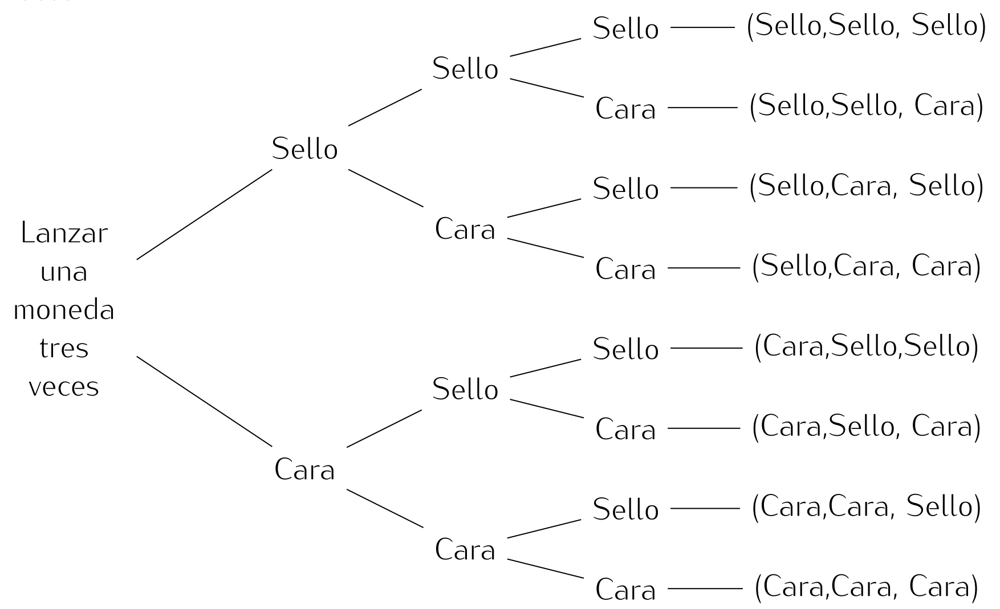
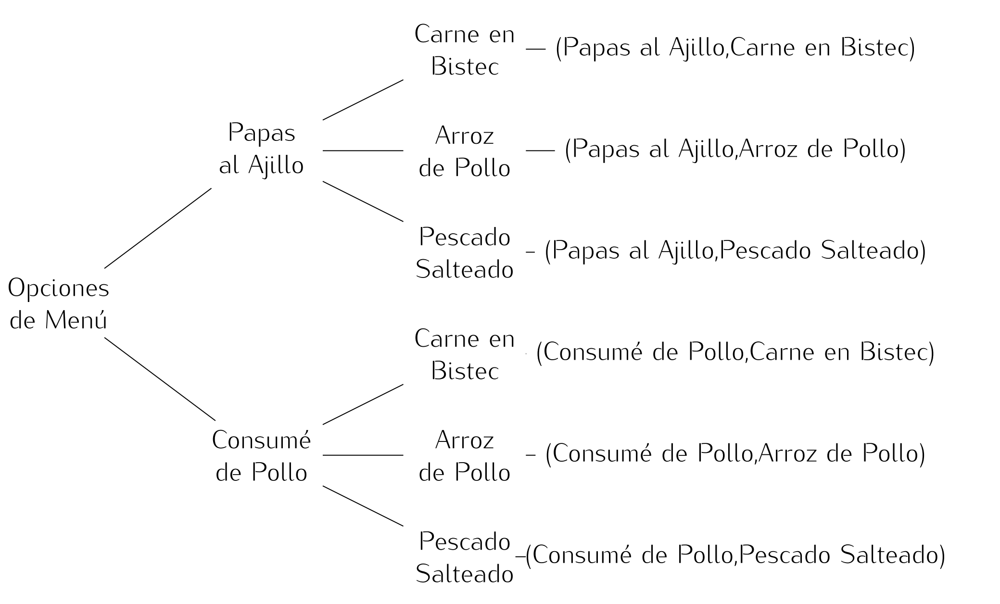

Diagrama de Árbol.
Un árbol de probabilidad (que veremos a detalle más adelante) es una herramienta que se utiliza para determinar si en realidad en el cálculo de muchas opciones se requiere conocer el número de objetos que forman parte del espacio muestral, estos se pueden determinar con la construcción de un diagrama de árbol.
Definición: Diagrama de Árbol
Un diagrama de árbol, es una representación gráfica de todos los posibles resultados de un experimento junto con sus probabilidades.
Para la construcción de un diagrama en árbol se partirá poniendo una rama para cada una de las posibilidades. Cada una de estas ramas se conoce como rama de primera generación.
En el final de cada rama de primera generación se constituye, un nudo del cual parten nuevas ramas conocidas como ramas de segunda generación, según las posibilidades del siguiente paso, salvo si el nudo representa un posible final del experimento (nudo final).
Hay que tener en cuenta que la construcción de un árbol no depende de tener el mismo número de ramas de segunda generación que salen de cada rama de primera generación.
Ejemplo 1.
Al lanzar una moneda existen dos posibles resultados: que caiga cruz o que caiga cara. Veamos el diagrama de árbol que se obtiene al lanzar una moneda tres veces.

La primera vez que se lanzó la moneda solo se podrían obtener dos resultados. A partir de este punto, el número de posibles consecuencias se incrementa, pues en el segundo lanzamiento se pueden presentar cuatro distintos resultados (dos por cada uno de los anteriores), y en el tercero, ocho.
Ejemplo 2.
Marcela almuerza en el casino de su trabajo de lunes a viernes, y siempre hay para la entrada consumé de pollo o papas al ajillo y de plato fuerte pescado salteado, arroz de pollo o carne en bistec ¿Cuántos menús distintos puede escoger?
- Para seleccionar un plato de entrada: tiene dos opciones
- Consumé de pollo.
- Papas al ajillo.
- Para seleccionar un plato de fuerte: tiene tres opciones.
- Pescado salteado.
- Arroz de pollo.
- Carne en bistec.

Al contar las ramas de la segunda elección, se cuentan cuántos posibles menús hay. En este caso se aprecian seis:
6 = 2 \cdot 3
...
Cuando se tienen muchas opciones graficar el diagrama de árbol se torna muy complejo, por eso mas adelante estudiaremos el principio multiplicativo, que simplificará los cálculos.